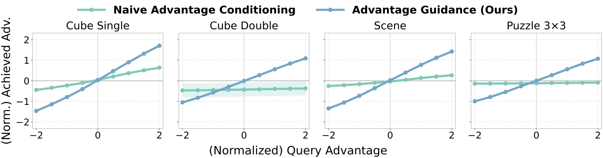

Do Both Training Ingredients Matter?

Action imagination and residual parameterization both help. Removing either component reduces success on both benchmarks; combining them gives the strongest performance.
We introduce Advantage Guidance, a new RL algorithm that trains with a simple supervised learning loss conditioned on advantages, yet outperforms strong RL methods. The key is to make the policy genuinely responsive to advantage conditioning, then use contrastive diffusion guidance at sampling time for advantage maximization.
RL holds the promise of learning a policy that can outperform the dataset behavior, but in practice often suffer from instability and hyperparameter sensitivity. In contrast, supervised learning is stable and scalable, but is fundamentally limited by the quality of the demonstration data. Can policy training be as simple and stable as supervised learning, yet as performant as RL?
One appealing option is to train the policy with supervised learning loss conditioned on future rewards or advantages, then query with high advantage to generate "good" actions. While such advantage-conditioned policy is conceptually appealing, naïvely doing so typically underperforms dedicated RL methods. What is missing from this simple recipe?
Missing Piece #1
Conditioned policies match queried advantage level, but do not always favor high-advantage actions.
To obtain performant RL policies, the objective is to maximize future rewards / advantage. The advantage-maximizing policy under a KL constraint to reference policy $\hat\pi(a\mid s)$ has a closed form:
An advantage-conditioned policy targets actions with advantage close to the queried value $A_{\mathrm{query}}$. Assuming the advantage is Gaussian distributed with variance $\sigma_y^2$, the conditioned policy is:
This penalizes actions whose advantage falls below or exceeds the query, and does not always maximize advantage. Classifier-free guidance (CFG) strengthens the same preference (see paper Section 4 for more details). One cannot fully address this with a higher $A_{\mathrm{query}}$ because it would be out of training distribution.

Missing Piece #2
If a policy is queried for a high-advantage action, it should produce one. Naïve conditioning often does not.
The prerequisite for using the conditional advantage signal is that the policy has learned to respond to it. We define advantage alignment as the extent to which the achieved advantage of a sampled action matches the value used to query the conditional policy. An aligned policy should produce higher-advantage actions when queried with higher values.

The advantage alignment problem. Naïve advantage-conditioned policies responds very weakly to advantage inputs on 20 OGBench tasks across 4 domains, often generating actions that have the same advantages even when requested with different values. Our method makes the achieved advantage closely track the requested advantage.
We find that this is because the naïve advantage-conditioned policy mostly ignores the conditioning signal and regresses to an unconditional policy. And no, using a transformer does not fix this issue (see paper for more details).
AG combines three ingredients. The first two make the conditional policy advantage-aligned during training; the third uses that aligned policy to maximize advantage during sampling. Policy training remains a standard supervised flow-matching objective. See the paper's Algorithm 1 for an algorithm summary.
Typically, a dataset contains only one action for any given state. As a result, the policy receives little direct supervision on how actions should change as the requested advantage vary. We provide counterfactual supervision by augmenting the dataset with actions sampled from the reference policy $\hat\pi$:
In practice, we also normalize advantages using the imagined actions. We compute $\mu_s=\frac{1}{K+1}\sum_{j=0}^{K}A(s,a_j)$ and $\sigma_s^2=\frac{1}{K+1}\sum_{j=0}^{K}(A(s,a_j)-\mu_s)^2$, then use $\tilde A(s,a_i)=(A(s,a_i)-\mu_s) / \sqrt{\sigma_s^2+\delta}$ as the conditional input.
Since naïve conditioning often ignores the conditioning signal, this motivates an approach that forces the conditional policy to focus on the advantage input by separating out the conditional and unconditional components. We train policies with flow matching, and parameterize the conditional policy as a residual flow $v_\theta$ to the flow field of an unconditional reference policy $v_{\hat\pi}$:
The conditional policy is trained with conditional flow matching, and the reference flow $v_{\hat\pi}$ is trained with regular flow matching.
Since the reference flow $v_{\hat\pi}$ already handles the advantage-independent part of the denoising problem, $v_\theta$ is encouraged to model how the velocity field must change with the advantage label $y$.
During sampling, we use what we call contrastive guidance to guide the sampling process toward higher-advantage actions. We contrast advantage labels $y_+$ and $y_-$ during each denoising step:
Theoretical guarantee.
Suppose the advantage-label likelihood belongs to the exponential family $p_Y(y\mid A)=h(y)\exp(T(y)A-F(A))$. If we choose $w, y_+, y_-$ such that $w[T(y_+)-T(y_-)]=1/\beta$, the contrastively guided score exactly matches the score of
the solution to KL-regularized advantage maximization where $\beta$ is the regularization strength. Thus, for $w>0$ and $T(y_+)>T(y_-)$, contrastive guidance favors high-advantage actions rather than merely matching a fixed advantage target. See proof in the paper.
Practical Implementation.
In practice we choose the exponential family $p_Y(y\mid A)$ as a Gaussian distribution $\mathcal N(\mu, \sigma_y^2)$. In this case, we can choose guidance weight $w=\sigma_y^2/[\beta(y_+-y_-)]$ to maximize advantage subject to KL constraint with strength $\beta$.
We evaluate on 26 long-horizon sparse-reward tasks: 20 tasks from OGBench and 6 tasks from OCBench. OGBench's play-style data comes from scripted behaviors pursuing random goals, often producing trajectories that are very suboptimal for the task. OCBench uses near-expert demonstrations designed to emulate human-like demonstrations (e.g. smooth, non-markovian), making it a particularly relevant test of RL on the kind of data used in real-world robotics.

Offline RL performance, 10 seeds. Advantage Guidance (blue) achieves the highest aggregate success rate across all 26 tasks, outperforming strong actor-critic methods (grey) as well as supervised-learning-based methods (green) and diffusion guidance methods (shaded green).
Simple supervised training.
State-of-the-art performance.
While we expected the main benefit of AG to be its simplicity, it empirically outperforms much more elaborate RL methods.
Action imagination and residual parameterization both help. Removing either component reduces success on both benchmarks; combining them gives the strongest performance.

Conditional vs CFG vs Contrastive Guidance (CG) sampling for AG: even when quried with high-enough advantage, conditional sampling and CFG significantly underperform CG on 6 OCBench tasks.